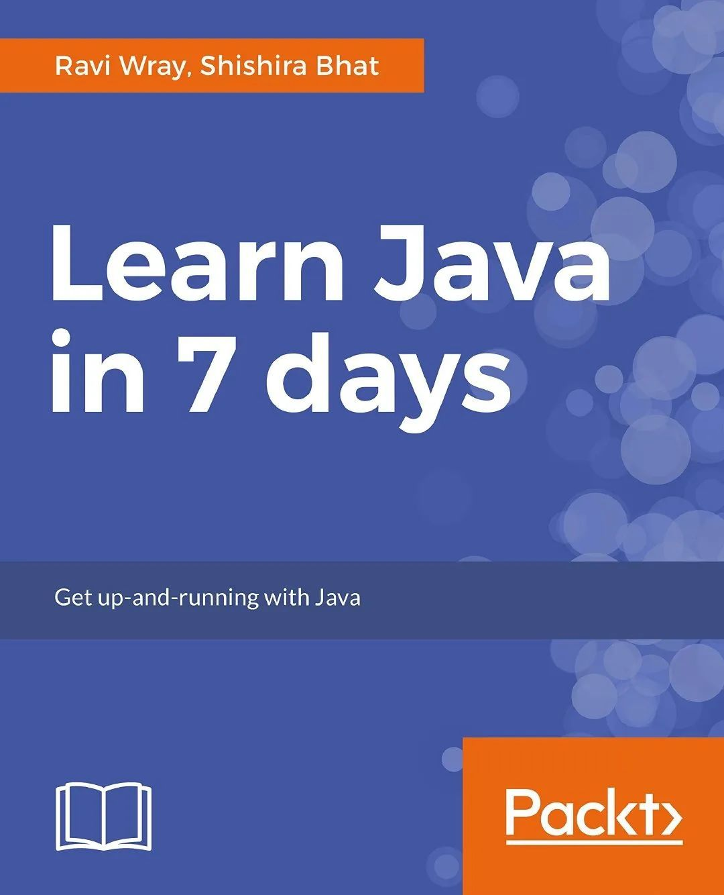
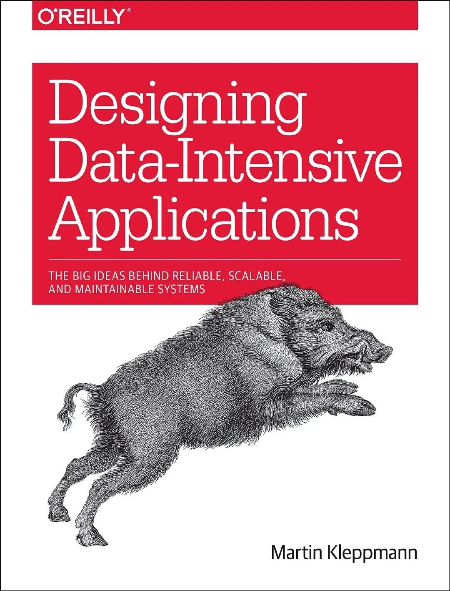

今天是周末，难得有闲暇，抽点时间和大家分享一些心得和感受，希望能够一些在迷茫中的同学带来一点帮助。
为什么拒绝速成
这是我的第一篇闲聊文章，我写的自然也是我最想写的内容，我想我要说的大家通过标题应该就能get到了。实际上这句话的前半句并不是我说的，它来源于一篇著名的英文文章: “Teach Yourself Programming in Ten Years“，即用十年的时间自学编程。原作者是Google的技术总监Peter Norvig，大家感兴趣可以读下这篇文章，虽然是英文的，但也不难懂。
在看这篇文章之前，我以为只有中国才到处都是21天精通XXX的书籍，后来发现美国也是一样。甚至时间更短，还有书叫做如何在7天内学会Java的。

在我毕业之前，我也看过买过一些这样的书。当时看觉得还可以，虽然有些过度吹嘘，但是还是有些内容的。又过了一段时间，发现这些书里面好些书的名字虽然不同，作者也不一样，但是讲的内容大同小异，或者是有时候去网上搜索某个关键词，中文的内容搜出来几乎千篇一律。我试着看过一些，不客气的说许多是copy and paste，或者关键点一笔带过，显然发布者既非原创也没有自己的思考。在我开始写TechFlow之后，收到了好几个出版社的出书邀请，再结合之前的经历，我醒悟了一个道理。
在计算机专业领域，国内优秀的原创内容真的是太少了。我想这一点出版社的从业者应该体会非常深刻。
领悟了这点之后，我拒绝了这些出版社的请求，原因也很简单，我觉得自己实力目前还不够，不想给这个已经很乱的市场添乱。而落在学习上，我开始放弃国内的资料，转而选择一些国外的顶级出版社，比如机械工业出版社和OREILLy等出版的图书。有些英文看不太明白的就找中文版，两相对比，我感觉学习的质量和速度都提升了很多。看了一段时间，再看市面上许多畅销的技术书，就很难做到不嫌弃了。倒不是所有书都不行，而是优秀的书太少了，挑选的成本太高。
除了书之外，市面上还有各种各样号称可以速成的教程，往往分享者会有一个很好的头衔，再配上一张半身照，大神的光芒闪闪发光，仿佛在说你付钱就会变强。不仅如此，还有各种培训班的宣传广告里写着，你只要来我这里上课，就能去BAT，拿着两万多的月薪，从此走向人生巅峰。
我之前也在朋友圈吐槽过，为了一个无良公众号分享的资源，我加了一个资源分享者的微信。没想到此人在给我分享了一堆看起来唬人，但实际并没有什么干货的资料之后，向我宣传起了一个培训班。我看了一下海报，写着主讲人是阿里巴巴高级专家，能够保证可以找到25K以上的工作，并且该培训班异常火爆，已经报名超过了好几百人，马上就要截止了。
作为在阿里呆过的人当然不会相信，这里的门道其实并不高深，网上随便查下就可以知道，阿里巴巴高级专家一年收入几百万上下，而教一个学生才收三千，那么他一年要收多少学生才能赚回工资？就算真的招到了几百人，又怎么保证教学质量，还能一对一地指导呢？
举这些例子除了说明这些内容多不靠谱之外，更想说明一点，现在的市场和人都太浮躁了，总想着快速，走捷径。我现在觉得效率或有高低，但捷径并不存在。疫情期间，中国和其他各国的应对，其实就是一个很好的例子。
巴菲特曾说过他理财的方法非常简单，但是常人大多做不到，因为他们无法忍受用几十年的时间慢慢变富，人们似乎也无法忍受慢慢变强，总想一撮而就。然而世上没有可以速成的伟大人物，即使工程师不是那么伟大，但一个合格并且优秀的工程师也是需要长久的时间培养的。我们应该铭记这点，远离这些让人浮躁，或者是鼓吹浮躁的东西。
如果你真的想要学好编程或者是别的什么技术，想要在某个领域做出成绩，请做好付出几年艰苦努力的准备。我个人认为这是一切的基础，因为不论我们采取什么样的学习方法，运用什么样的学习资料，有着什么样的学习资源，持续数年的努力都是必不可少的。
我们应该怎么样学习
###
选择合适的内容
那么我们应该怎么样来学习技术相关的内容呢？这一点其实仁者见仁，有些人喜欢用视频，有些人喜欢看书。但我个人比较倾向于看书，原因无他，因为效率高。从理论上分析，人类阅读的速度远高于说话的速度，再加上语言表述的问题，会导致看书的效率比看视频高得多。
举个简单的例子，比如某一堂公开课的总时长是20个小时，我们按照一天看45分钟算，需要差不多一个月才可以看完。这还只是看视频的时间，还没包含练习和思考以及总结，如果再考虑遗忘以及不理解的地方，折算下来这20个小时收益非常有限。当然世事无绝对，也有一些高质量的视频内容以及讲课大牛，可以做到简单的几句让人茅塞顿开的效果。但是要做到这点，一来需要讲课人实力超群，二来需要听课的人自身已经有了一定的积累。我个人认为可以先看书，带着疑问再去看大牛的视频找答案效果可能更好。
我看过的视频教程不多，除了常规的Coursera和MIT公开课等内容，我很难给出更好的推荐。关于书籍的我可以多说一点，其实上文当中已经提到了，我个人比较倾向于国外经典的教材和出版社。国外的出版社喜欢一个系列一个系列地出，比如机械工业出版社出版的书都是黑色封面的大块头的书。再比如OREILLY出版社出版的书籍封面往往都是动物，特点比较鲜明，我们通过封面一眼就可以识别。
这个是OREILLY出版社的书：

这个是机械工业出版社的书：
这些知名的出版社的系列图书往往质量都很高，基本上专业相关的书都能找到。国内也有一些不错的出版社，大家在选书籍的时候可以多考虑一些。
学习套路
这节的标题我起的是学习套路而不是学习方法，因为我觉得每个人应该有自己的方法，我这里只是分享我总结出来的几个套路。
从基础开始，循序渐进
我总结出来的第一个套路就是从基础开始，循序渐进。
现在各个领域的知识都是有相关性的，而且关联性都很强，也就是说涉及到的知识往往是相对分散的。但我们学习的目的往往都是明确的。比如我想要以后成为算法工程师，或者是我想要学机器学习。那如果我们直接冲着我们的目标去，比如我就一股脑地去学机器学习，会发生什么？
我之前就这么做过，最大的感受有两点，第一点是经常遇到想不通的问题，第二点是经常有不知道的巨难的背景知识。比如当时我学SVM的时候，碰到了拉格朗日对偶以及KTT条件等内容，直接给我整蒙了。即使我花了很多精力，搞清楚了这些东西究竟是什么，它的每一步都是怎么推导的，但是我还是觉得一知半解，因为这个东西是我记住的，而不是我理解的。理解不了的原因是因为我没有更底层的知识做支撑。
同样的道理，如果一个没学过数据结构的同学直接上手去学决策树、随机森林肯定也会懵逼。因为缺失了太多数据结构的知识，我们当然可以学习的时候查漏补缺，但是如果只是缺了一点，可以这么干，但是缺的多了就不行了。就好像冰山理论，即使我们把水上浮着的冰山啃透了，还有水下更多看不到的部分。
因此第一个套路就是一定要循序渐进，先把基础打好再去学之后的内容。比如之前我在写线性代数专题的时候把线性代数的书又看了一遍，加上写文章加深了一些印象，现在看各种paper上的公式和推导都得心应手了很多。其实很多人并非不知道这点，只是还是因为图快的心理在作祟，总想着迅速搞定，花费最小的代价。但其实并没有什么最小的代价，不怕付出代价才是真的最小代价。
相反如果基础扎实了，后面学习的速度会越来越快，因为你的理解能力提升了，学习的效率也会提高。这也是为什么大牛越来越牛，后面的人越努力觉得差得越远的原因，因为大牛的知识体系太完善了，他们理解新的知识的能力和速度远远超过其他人。这也是为什么大学里面大一大二成绩出色的学生到了大三往往可以很轻松也获得好成绩的原因，除了他们已经养成了良好的习惯以外，也是因为他们的学习效率更高的原因。
勤于动手，从简单开始
第二个套路是勤于动手，从简单开始。
和其他知识相比，编程能力是一个很大的概念，既包含很多知识，又蕴含很多实践技能。所以想要成为一个优秀的程序员并不是一件简单的事情。不论是什么领域的学习，如果只专注理论都会免不了纸上得来终觉浅的感觉，而且最后落到实际的工作或者是能力上，一定是以实践能力体现的。所以动手能力非常重要，不能指望说先理论学习出成果之后再开始实践。
一开始的时候总会觉得很困难，想要抗拒或者是逃避。这是非常正常的，针对这个问题有几个要点，首先是从简单开始。有些人会想积累了一定知识储备之后再开始动手，实际上这样做的帮助并不大。即使理论学得周全，实践的时候依然会有很多问题。所以我们可以快速学习快速实践，学一点实践印证一点。我们实践的目标越小，也就越容易，我们心里的抗拒也就越小。
所以不要觉得我写一个hello world或者是for loop太简单了不屑于动手，做简单的事情并不丢人，也不浪费时间。这也是为后面进阶打好基础。
做你需要垫脚尖才能够到的事情
第三个套路是做你需要垫脚尖才能够到的事情提升最快。
这个套路我听过很多次，第一次听是当初直接引导我开始acm之旅的学长分享给我的，第二次是在公众号里看到轮子哥的自述。我学长可能名头比轮子哥差点，但也是曾经在acm中一个人出战（一个队伍3人）单挑银牌，在世界级的线下编程竞赛中拿过冠军的世界级选手，两个大牛的观点完全相同，显然不是巧合，所以这个道理显然是非常珍贵的。
如果说把学习比喻成拿到一个一个的罐头，我们站在地上拿桌上的罐头总是简单的，但是桌上的罐头很小，我们拿了收益并不高。橱柜上的罐头要大很多，但是它们放得高比较难拿。想要直接拿很高的罐头也是可以的，比如可以跳起来拿。但是很有可能拿不稳，导致罐头摔了，收益还是不大。最好的结果是我们拿那些虽然够不到，但是踮起脚来勉强能够摸到的罐头。
也就是说，我们在学习的时候，应该挑那些刚好超出我们能力范围，但是又不是太难的点下手，这样突破舒适区提升自己的效率最高。
深挖细节，多思考
最后一个套路是深挖细节，多思考。
这个套路是我自己总结出来的，目前没有在其他人的博客上看到过。很多时候我们的学习非常笼统，举个例子，比如我们学逻辑回归，就搞清楚逻辑回归，损失函数，梯度下降法，再多一点就是推导一下公式就结束了。书本上或者是大牛博客里写的也就是这些，但是有没有想过，为什么逻辑回归的损失函数不能用均方差而必须用交叉熵呢？
如果你想过这个问题，并且试着去追寻答案的话，你会发现原来是因为均方差用在sigmoid函数上在接近于0或者1的位置的梯度非常小，会导致迭代非常慢。那为什么交叉熵不会慢呢？你会去继续思考交叉熵的原理，去推导交叉熵的公式，带入实际的值计算。通过对比，直观地感受两者的差距。
再比如你看到书上说朴素贝叶斯不太容易陷入过拟合，因此在一些正例稀疏的场景下广泛使用。不仔细看一眼瞥过去就过去了，但是如果深入去想，又会发现许多许多问题。为什么贝叶斯模型不容易过拟合呢？什么样的模型不容易过拟合，什么样的容易过拟合呢？为什么不容易过拟合就使用正例稀疏的场景呢？什么场景是典型的正例稀疏的场景呢？
你看，简单的一句描述，深挖下去有许多许多的细节。在学习的时候，多思考不放过这些细节，你会发现你对原理的掌握和学习的能力都得到了提升。更重要的是你会完整地编织知识体系结构，并且对你自己的心态也会有非常正面的影响。
静心与理智
最后说一点也是最重要的，就是静心和理智。
这一点其实我在知乎的回答里分享过，我个人认为不仅是工程师也是每一个奋斗努力的人最需要的品质，就是静心或者是理智，下面我举个例子仔细说说。
我想只要是工程师应该没有人没有遇到过bug或者是疑难问题，从前我遇到问题的时候总是容易烦躁，但发现越烦躁越不能解决。经常请教了别人，或者是自己冷静下来一看，其实只是一个很简单的小问题，只是自己的烦躁放大了它。后来我从一个大佬的分享当中获得了一个技巧，我们可以经常试着站在第三方的视角也就是上帝视角来审视当下的自己。我试着几次，真的有了蛮多感受，尤其是当我遇到问题的时候。
我发现我会觉得烦躁是两个原因，一个是因为觉得问题出现得违反直觉，第二个原因是因为它迟迟不能解决。我觉得前者似乎是人的本能，人类讨厌所有违反直觉的事物，而第二点则更多和我的性格有关。从本质上来说，我们把问题或者是bug看成了是一个不应该出现的东西。但其实，世界的本质就是运转不完美的，黑天鹅总会出现，程序中的bug和系统里的出乎意料的事情也是无可避免的，这是再厉害或者是再智慧的人也无法解决的，就好像物理当中的系统误差一样。
不管你如何觉得如何感受，它就在那里。
当我们站在客观的角度来看，我们写了一段程序会出问题是正常的，能符合预期运行完美才是意外的。所以我们要做的第一件事就是转换心态，做好迎接问题和解决问题的准备，而不是期待问题本身不出现。这是克服本能的方法，针对性格也有办法，就是静心。我其实一直以来都是一个急性子，从小就习惯风风火火的做事情，不管做什么都想第一时间获得成效，所以debug的时候尤其痛苦。如果一个bug持续一天也没有找出原因，简直像是要了我的半条命，绝对会让我食不知味，睡不安寝。
直到有一天我突然意识到，我为什么要这么着急地做事情？我为什么要尽快地找到bug，它究竟能改变什么？我为什么总是期望种下的种子立即会收获？其实事情本身并不紧急，也没有人拿着刀架在我的脖子上，只是我在着急。
慧能和尚说不是幡动，不是风动，仁者心动。
学习也好，debug也罢，我们着急上火也许是我们潜意识认为这些恼人的事情一开始就不应该出现。在我们的设想当中，我们学习一门技术就应该只需要7天，我们写的代码就是不会有bug，我们就是可以轻轻松松就走上人生巅峰。显然，这些想法都是幻觉。我们都知道真实的世界是残酷的，从零开始入门就是会很难，成长和进步必然伴随着阵痛。刚开始写代码就是会很吃力，总是看得明白写不出来。持续的努力就是痛苦的，成功的道路就是艰难的，遇到的所有困难和挫折都是常态，进步就是缓慢的不直观的，所有让我们烦躁和不安的事情，都是现实。
我们的急躁和抗拒，也许本质逻辑是我们不愿意接受残酷的现实，还残留着一些不切实际的幻想。
既然黑天鹅总会出现，写的程序bug总是难免，那么我们又为什么要着急呢？出现问题了就分析问题解决问题，学习的时候按部就班，聚沙总能成塔，集腋必然成裘，我们和我们期待中的自己，就是差了几年时间的努力，从当下开始，之后总会到达，既然路程已经确定，又何必着急呢？
种一棵树最好的时间是十年前，其次是现在。既然今天我们种下种子，总有绿树成荫的那天。何况十年之后我们也还依然年轻，你们觉得呢？
本文分享自微信公众号 - TechFlow（techflow2019），作者：梁唐
原文出处及转载信息见文内详细说明，如有侵权，请联系 yunjia_community@tencent.com 删除。
原始发表时间：2020-03-22